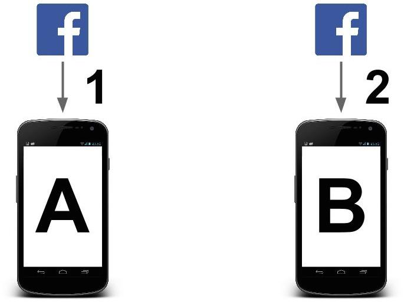

P2Feed
We have built a mock-up of the Facebook Android application that enables peer-to-peer connections.
This application allows a user to download posts from their peers in addition to Facebook servers.
Data Usage Mode Selector
Original

Steps
- A downloads news feed from Facebook
- B downloads news feed from Facebook
Reduced
Steps
- A downloads news feed from Facebook
- B downloads news feed post IDs from Facebook
- B sends news feed post IDs to A
- A sends overlapping news feed posts to B
- B downloads non-overlapping news feed posts from Facebook
Minimal
Steps
- A downloads news feed from Facebook
- B downloads news feed post IDs from Facebook
- B sends news feed post IDs and list of friends to A
- A sends overlapping news feed posts as well as public and mutual friend posts to B
Data Logger
Keep track of how much data you save with our app!